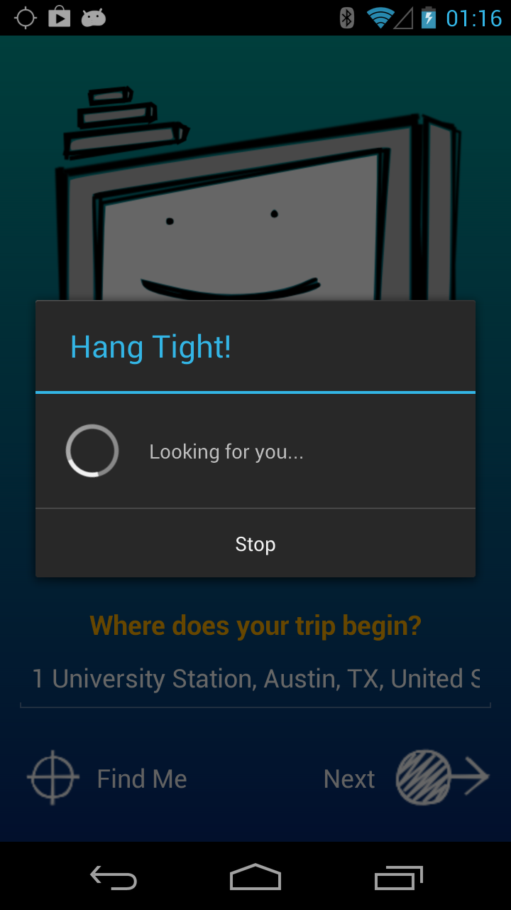
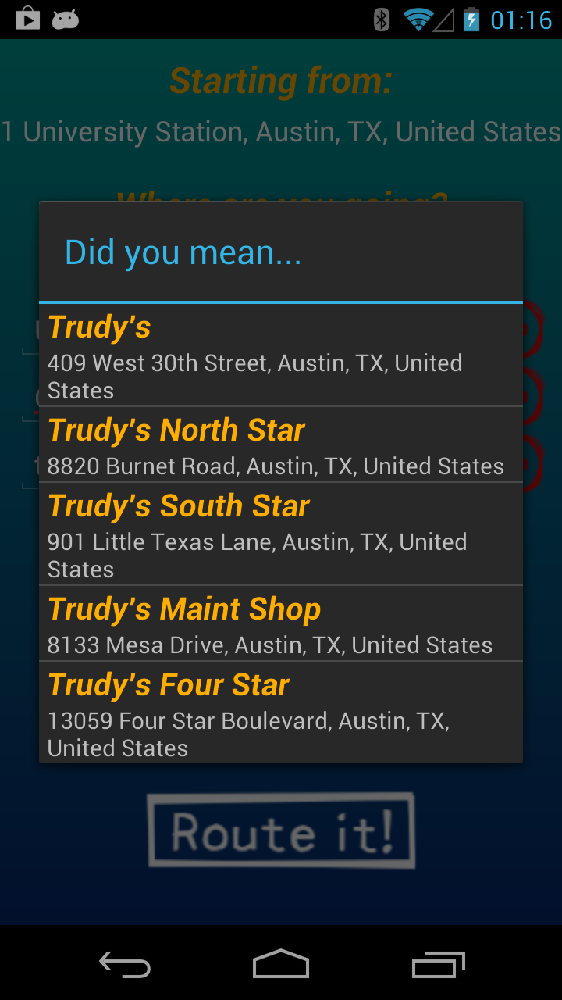

...the right route for many places.
Routy is an app that helps you figure out the best route between many different destinations. Just give it an origin and up to 5 destinations and Routy will calculate the most efficient route by distance or time beginning at your origin! It's fast, easy, and really simple - jump right in and get Routing!


Some technical stuff